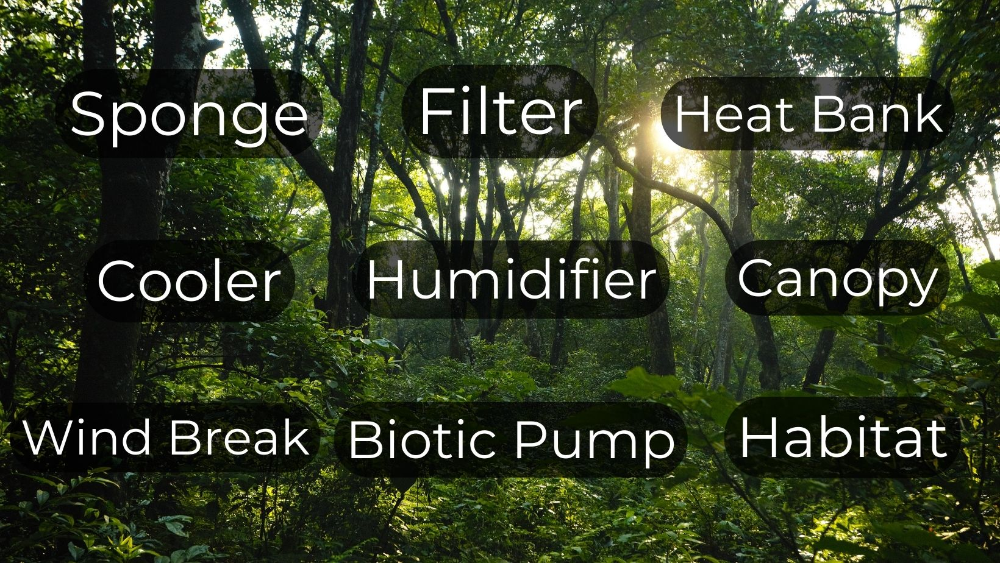

Forests Are Not Just Carbon

Date: Friday, April 24 — 3:00–4:30 PM (Eastern Time)
Forests store carbon, but they do much more. Forests shape water cycles, support wildlife, cool landscapes, and help regulate climate.
When forests are cut down, we lose far more than trees. We lose systems that capture rainfall, prevent flooding, clean air and water, moderate temperature, and help generate rainfall across entire regions.
This webinar explores the many ecological services forests provide and why understanding these functions is essential for protecting them.
What You Will Learn
- How forests influence every stage of the water cycle
- The role forests play in evaporation, condensation, cloud formation, and precipitation
- How forests function as natural sponges that absorb rainfall
- How forests filter water and clean the air
- How forests moderate temperature and humidity
- How forests reduce wind and protect surrounding ecosystems
- How forests help bring rain to distant landscapes through the biotic pump
- How forests provide habitat for wildlife and entire ecological communities
Why This Topic Matters
Public conversations about forests often reduce them to carbon storage. But forests are much more than carbon reservoirs. They are infrastructure for water cycles, habitat for wildlife, protection against floods, and stabilizers of climate.
Understanding these benefits helps us make wiser decisions about how forests are managed and protected.
Who Should Attend
Anyone who loves forests and wants to strengthen their understanding and advocacy for protecting them.
Recording
A recording will be available to everyone who registers.
Register
Registration will open soon.